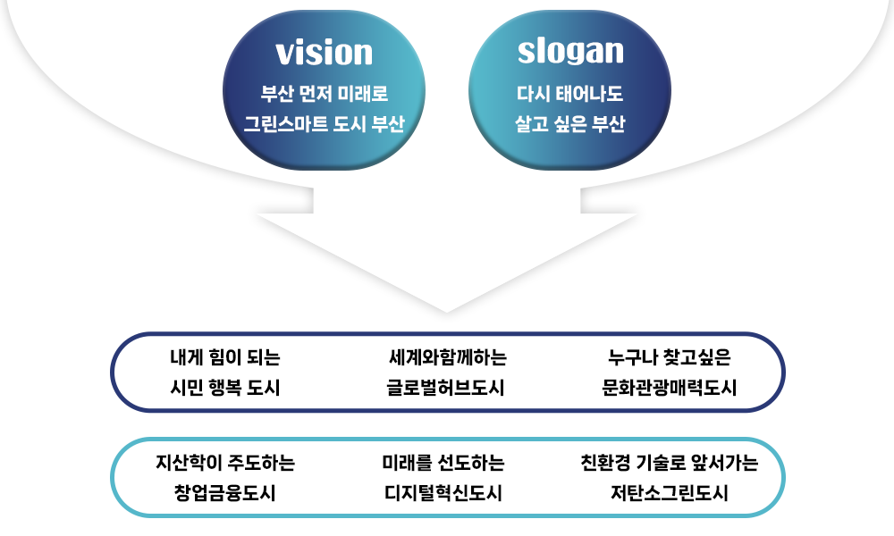
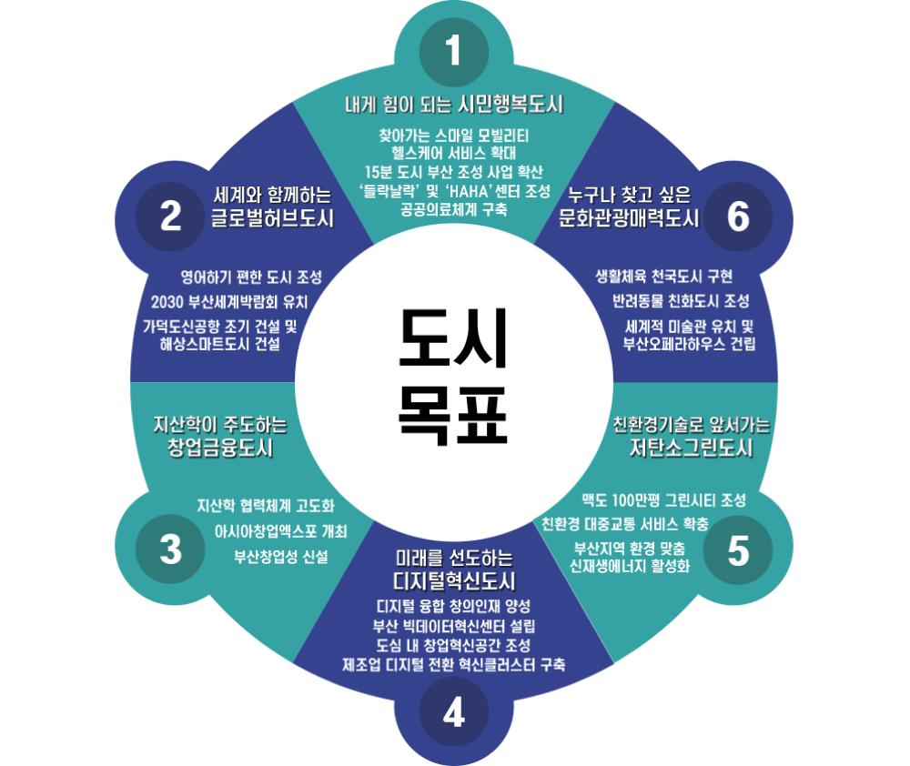

부산소식
새소식
부산시보
보도·해명자료
공고
부산시 공식SNS
시정사진
민원신청
민원신청
제안신청
시민참여
민원안내
120콜센터
정보공개
주요시책
정보공개
예산
감사정보
지방공기업
계약정보
분야별 정보
경제
일자리·교육
사회복지
보건·건강
도시·건축·주택
안전
환경보호
교통·물류
해양농수산
행정
문화체육관광
부산소개
부산의 오늘
부산의 상징
부산시청 안내
부산의 인물
부산의 역사
부산통계
도시브랜드
주민자치회
로그인 / 회원가입
도시비전과 목표
홈
부산소개
부산의 오늘
도시비전과 목표
부산소개
부산의 오늘
도시비전과 목표
기본현황
행정구역/지도
행정구역
행정 읍/면/동 현황
법정 동/리 현황
자치구·군 주소 및 전화번호
행정지도
국제교류 및 자매도시
국제교류
자매도시
우호협력도시
국제교류전시관
국제회의체
국제교류 주요사업
외국인학교 현황
부산의 상징
지역상징
기관상징
상징마크, 마스코트
브랜드 슬로건
부산체
부산시민헌장
부산시민헌장
이전 부산시민헌장
부산찬가
부산시민의 날
부산시청 안내
시청사 안내
사청사 소개
시청 찾아오시는 길
주차장 안내
부산시청 종합안내
전화번호 안내
민원안내 전화
실·본부·국 전화
직속기관 ·사업소 전화
FAX 번호
행정전화번호부
조직도
조직도
기구/정원
실·본부·국
직속기관·사업소 소개
직원검색
시설운영 안내
시청사 견학
시청 전시실 대관
시청 전시실 대관안내
시청 전시실 사용자 준수사항
공기업·출자·출연기관
감사정보
햔토수호(충신)
독립운동가
학자 및 교육자
사회운동가
기업인
문화예술인
부산광역시 문화상
자랑스러운 시민상
부산광역시 명예시민
부산의 역사
명칭유래
부산유래
동명유래
시대별 부산역사
선사시대
삼국시대
고려시대
조선시대
개항기
일제강점기
광복이후부산시
부산직할시
부산광역시
부산역사연표
문화재
문화재 소개
부산의 주요 경승지
해운대
태종대
신선대
몰운대
오륜대
의상대
겸효대
강선대
이기대
시랑대
삼성대
황학대
적선대
용두대
소학대
시정역사
도시개발
도시교통
상하수도
금융·무역
항만
해운
사회복지
수산업
문화예술·문화유산
환경
관광진흥
체육
교육
미래산업
상업
농업
역대시장
연혁
향토사도서관
부산역사문화대전
부산통계
통계로 보는 부산
시민공감지도
통계소식
통계자료실
통계의 이해
도시브랜드
도시브랜드
도시브랜드 개념
도시브랜드 상상ON
도시브랜드위원회
도시브랜드 3개년 기본계획
도시브랜드 연차별 실행계획
도시브랜드 팝업전시품
부산브랜드웹툰
부산기네스125선
소통 캐릭터
소통 캐릭터 이용신청안내
부기 인스타툰
부기튜브
부산관광브랜드
주민자치회
추진배경 및 방향
설치/운영 및 체계도
주민자치회 현황
주민자치회 소식
우수사례
활동사진첩
주민자취위원회 구성
회의록
주민자치위원회 활동
운영프로그램
현재 페이지
1
/ 전체페이지 5
도시비전

도시목표
